Welcome
In last week’s online activity, you were introduced to R and how to inspect data. In this activity, we will explore data visualization, specifically focusing on visualizing relationships between two numeric variables.
Why visualize relationships?
Understanding how two variables relate to each other is fundamental to data analysis. For example, we might want to know: - Does a possum’s tail length relate to its body length? - Do babies with longer gestation periods tend to weigh more at birth? - Is there a relationship between a baseball player’s on-base percentage and slugging percentage?
Scatterplots help us answer these questions visually!
Learning Objectives
By the end of this tutorial, you will be able to:
- Create scatterplots using
ggplot2to visualize relationships between two numeric variables - Identify and label response (y) and explanatory (x) variables appropriately
- Characterize relationships by their form, direction, strength, and outliers
- Apply transformations to reveal hidden patterns in data
- Handle overplotting using transparency and jittering techniques
Visualizing two variables
In particular, in these tutorials you will learn techniques for characterizing and quantifying the relationship between two numeric variables.
In a statistical model, we generally have one variable that is the output and one or more variables that are the inputs. We will refer to the output variable as the response and we will denote it with the letter \(y\). In other disciplines or contexts, you may hear this quantity called the dependent variable. More generally, the response variable is a quantity that we think might be related to the input or explanatory variable in some way. In other fields, these can be called “independent” or “predictor” variables. We typically denote any explanatory variables with the letter \(x\). In these tutorials, we will focus on the case of a single explanatory variable. In the next tutorials, however, we will allow for several explanatory variables.
When we study relationships, we typically have:
Response variable (what we want to understand) - Also called: dependent variable, outcome variable - Denoted by: \(y\) - Plotted on: vertical (y) axis - Example: A baby’s birth weight
Explanatory variable (what might explain the response) - Also called: independent variable, predictor variable - Denoted by: \(x\) - Plotted on: horizontal (x) axis - Example: Length of gestation (weeks)
- Both variables are (continuous) numerical
Graphical representations
Just as you learned to visualize the distribution of one variable with a histogram or density plot, statisticians have developed a commonly used framework for visualizing the relationship between two numeric variables: the scatterplot. The scatterplot has been called the most “generally useful invention in the history of statistical graphics.” It is a simple two-dimensional plot in which the two coordinates of each dot represent the values of two variables measured on a single observation.
- Put the response variable on vertical axis
- Put the explanatory variable on horizontal axis
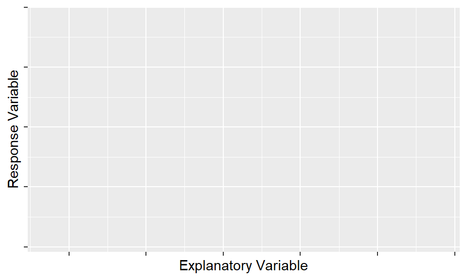
By convention, we always put the response variable on the vertical, or \(y\)-axis, and the explanatory variable on the horizontal, or \(x\)-axis.
Your First Scatterplot
Let’s look at data from possums in Australia. We’ll examine whether tail length can help us predict total body length.
Question: Do possums with longer tails also have longer bodies?
In ggplot, we bind the x and y
aesthetics to our explanatory and response variables, and then use the
geom_point() function to actually draw the points. Here we
can see a scatterplot of the total length of a possum’s body as a
function of the length of its tail.
ggplot(data = possum, aes(y = total_l, x = tail_l)) +
geom_point()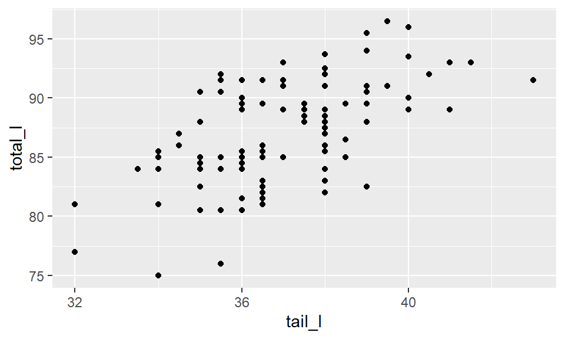
Note that the axes have been labeled with the names of the variables automatically, based on the names of the variables in the dataset.
Labeling Axes
For clarity, it is important to give your axes human-readable labels.
We can do that with the labs() function. It is a good data
visualization practice to include any necessary units in axis
labels!
ggplot(data = possum, aes(y = total_l, x = tail_l)) +
geom_point() +
labs(x = "Length of Possum Tail (cm)",
y = "Length of Possum Body (cm)")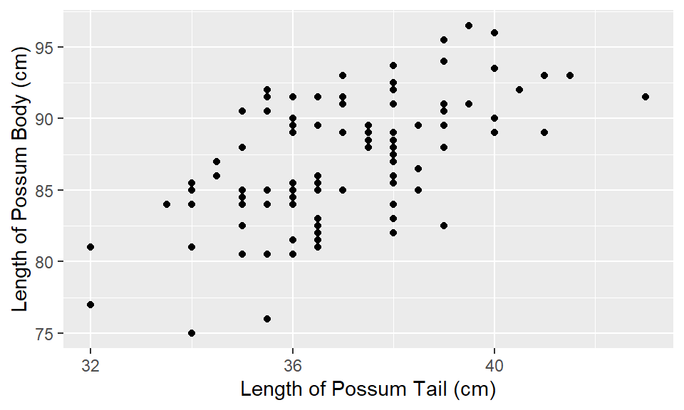
Note that the names of the axis labels must include quotations
(""), indicating to ggplot() that these are
names not variables.
Connection to boxplots
Since you already know how a boxplot can illustrate the relationship between a numerical response variable and a categorical explanatory variable, it may be helpful to think of a scatterplot as a continuous generalization of side-by-side boxplots.
- Can think of boxplots as scatterplots…
- …but with discretized explanatory variable
- The
cut()function allows for us to discretize a continuous variable- Choose appropriate number of “boxes”
Discretizing Continuous Variables
The cut() function converts a continuous numeric
variable into categories (bins). Think of it like creating “groups” from
a range of numbers.
For example, if tail lengths range from 32 to 43 cm,
cut(tail_l, breaks = 5) might create groups like: - Group
1: 32-34.9 cm - Group 2: 35-37.9 cm - And so on…
This allows us to create boxplots for each group!
Discretized scatterplot
We can connect these ideas by discretizing our explanatory variable.
This can be achieved in R using the cut() function, which
takes a numeric variable and chops it into a specified number of
discrete chunks. The breaks argument specifies the number
of chunks.
Here, we are creating a new variable named tail_cut from
using the cut() function on the original
tail_l variable. We are then saving this new variable back
into the original possum dataset.
possum <- possum |>
mutate(tail_cut = cut(tail_l, breaks = 5))We can then plot the relationship between total length and the new
tail_cut variable. What we’ve done is gathered up all of
the data points in these bins and plotted them in a vertical line,
rather than at their original tail length value.
ggplot(data = possum, aes(y = total_l, x = tail_cut)) +
geom_point()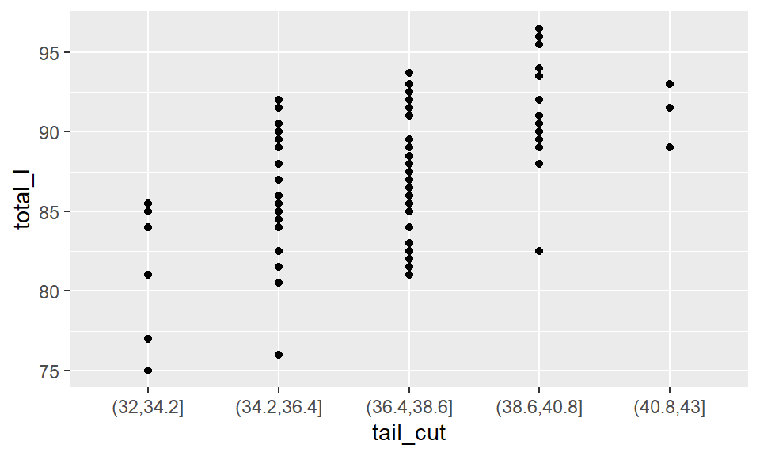
Boxplot
This type of dotplot is not standard. What is more common is to
create side-by-side boxplots of the distribution of these points. If we
change from geom_point() to geom_boxplot(), we
will get this more “standard” visualization.
ggplot(data = possum, aes(y = total_l, x = tail_cut)) +
geom_boxplot()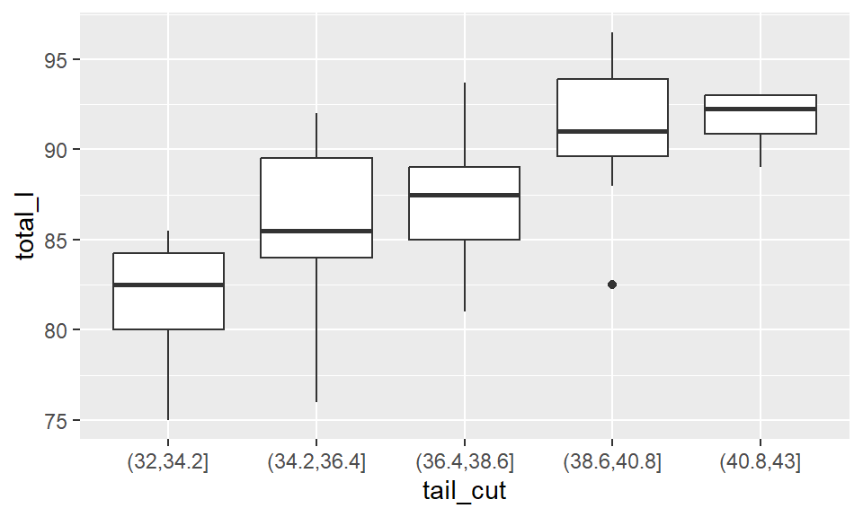
A notable attribute of a scatterplot is its connection to the raw
data. A boxplot, however, is wholly disconnected from the raw data, only
plotting summaries of the data. To re-forge this connection, we can
overlay the original data points on top of the boxplots, by simply
adding another layer to our ggplot()!
Let’s walk through a few parts of the code below. First, we have
added alpha = 0 to the boxplots, so that the “outlier”
points are not plotted (we don’t want to plot them twice). The
geom_jitter() function instead of the
geom_point() function, since the points are being plotted
on top of each other. You can think of jittering as taking the
overplotted graph (where the points are overlapping) and giving it a
tiny shake. Jittering will move the points a little bit side-to-side and
up-and-down, but their position from the original plot won’t
dramatically change.
ggplot(data = possum, aes(y = total_l, x = tail_cut)) +
geom_boxplot(outlier.alpha = 0) +
geom_jitter(color = "sky blue", width = 0.2)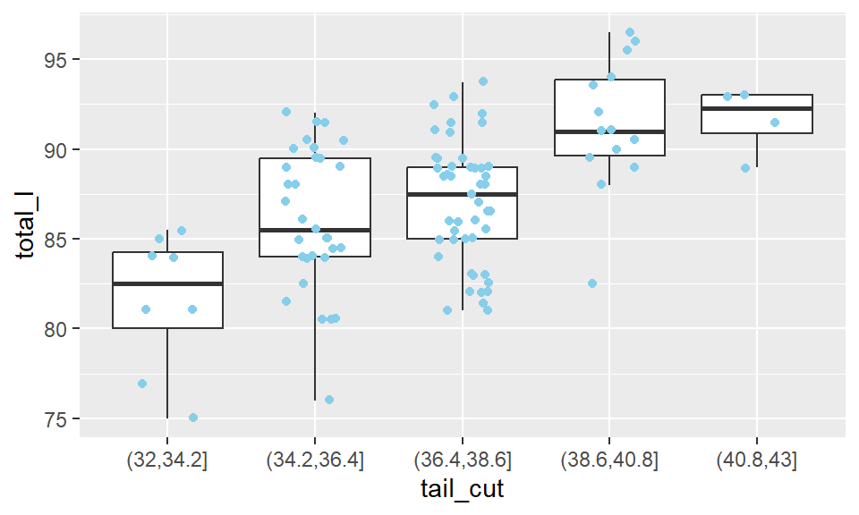
Now we can see the original data points, and the boxplots of the different tail length groups. We can see that overall, as the median tail length increases the body length also increases.
Now it’s time for you to get some practice making scatterplots.
Your turn!
Scatterplots are the most common and effective tools for visualizing the relationship between two numeric variables.
The ncbirths dataset is a random sample of 1,000 cases
taken from a larger dataset collected in 2004. Each case describes the
birth of a single child born in North Carolina, along with various
characteristics of the child (e.g. birth weight, length of gestation,
etc.), the child’s mother (e.g. age, weight gained during pregnancy,
smoking habits, etc.) and the child’s father (e.g. age). You can view
the help file for these data by running ?ncbirths in the
console.
Using the ncbirths dataset, use ggplot() to
make a scatterplot visualizing the relationship between birth weight and
length of gestation of these babies.
# Scatterplot of weight vs. weeks In the `ggplot()` map `weeks` to the `x` aesthetic and `weight` to the `y` aesthetic. Remember to use the `ncbirths` dataset!# Scatterplot of weight vs. weeks
ggplot(data = ncbirths, aes(x = weeks, y = weight)) +
geom_point()Boxplots as discretized/conditioned scatterplots
If it is helpful, you can think of boxplots as scatterplots for which the variable on the x-axis has been discretized.
The cut() function takes two arguments: the continuous
variable you want to discretize and the number of breaks
that you want to make in that continuous variable in order to discretize
it.
First, we will make a new variable, named weeks_cut,
which discretizes the original weeks variable. We will use
the cut() function, specifying four breaks.
What you should see: A new column in your dataset with 4 different category levels.
ncbirths <- ncbirths |>
mutate(weeks_cut = cut(___, breaks = ___)) The `cut()` function should cut the `weeks` variable into 4 different categories.Next, using the new weeks_cut variable, make
side-by-side boxplots illustrating how the birth weight of these babies
varies according to the number of weeks of gestation.
ggplot(data = ___,
aes(x = ___, y = ___)) +
___ In the plot `x` is `weeks_cut` and `y` is `weight` from the `ncbirths` dataset.ggplot(data = ncbirths,
aes(x = weeks_cut, y = weight)) +
geom_boxplot()Characterizing bivariate relationships
Scatterplots can reveal characteristics of the relationship between two variables. Any patterns–and deviations from those–we see in these plots could give us some insight into the nature of the underlying phenomenon. Specifically, we look for four things: form, direction, strength, and unusual observations.
- Form: What shape do the points make?
- Linear (points follow a straight line)
- Non-linear/curved (points follow a curve)
- No pattern (points are scattered randomly)
- Direction: Do variables move together or
oppositely?
- Positive (both increase together: ↗)
- Negative (one increases as other decreases: ↘)
- No direction (no clear trend)
- Strength: How closely do points follow the pattern?
- Strong (points tightly clustered around pattern)
- Moderate (some scatter but pattern visible)
- Weak (lots of scatter, pattern barely visible)
- Unusual observations: Any points that don’t fit?
- Outliers (far from other points)
- Influential points (could change the pattern if removed)
Examples of scatterplots
We’re going to look at a bunch of scatterplots that we found “in the wild” and talk about what we see, so that you can start to build some experience in interpreting them.
You can continue this exercise on your own by doing a Google image search for “scatterplot.”
As we work through these, please keep in mind that much of what we are doing at this stage involves making judgment calls. This is part of the nature of statistics, and while it can be frustrating–especially as a beginner. However, it is an inescapable part of doing statistics. For better or for worse, statistics is not a field where there is one right answer. There are of course an infinite number of indefensible claims, but many judgments are open to interpretation.
Sign Legibility
Here we see a negative, slightly non-linear relationship between sign legibility and driver age. This makes sense to me, since people’s eyesight tends to get worse as they age. We would characterize the strength of this relationship as moderately strong, since the pattern seems to be pervasive. There doesn’t seem to be any outliers here.
This relationship may be a good candidate for fitting a regression model, but the curvature in the relationship deserves attention. Indeed, very few relationships will be truly “linear,” but it is our responsibility to assess if it is reasonable to assume if a relationship is linear “enough.”
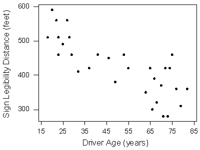
NIST
Conversely, in this next scatterplot we see little evidence of any relationship at all. The direction is neither positive nor negative, nor is there any clearly identifiable form. Any perceived relationship would be exceptionally weak.

Non-linear
In this “Example Scatter Plot” we see another clear, non-linear relationship. In this case, the direction is negative for negative values of \(x\), but positive for positive values of \(x\). The points are clustered fairly close together, so the relationship is fairly strong. The point in the upper-left-hand corner might be considered an outlier - since it is far from the other points - but it doesn’t represent a break from the overall pattern of the points.
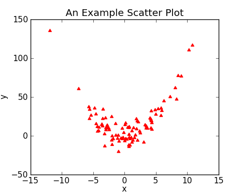
Fan shape
In this scatterplot, we see what is known as a “fan shape.” The direction is certainly positive, but the spread of the points increases dramatically as we get further from the origin. We will discuss this type of pattern more later, but it is an indicator of “non-constant” variance, as the variability (spread) in the y-values increases for larger values of x. Generally, log-transformations do a great job of “taming” these fan shapes, allowing for us to use a linear regression model on the transformed data.
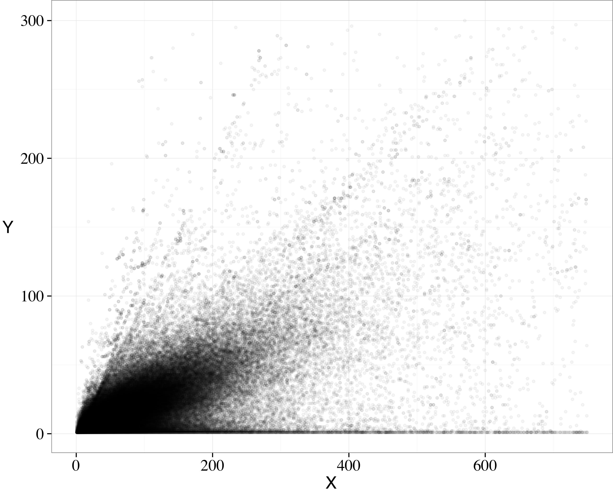
In these next exercises, you’ll get more practice creating scatterplots and characterizing what you see in them.
Your turn!
Creating scatterplots is simple and they are so useful that it is worthwhile to expose yourself to many examples. Over time, you will gain familiarity with the types of patterns that you see. You will begin to recognize how scatterplots can reveal the nature of the relationship between two variables.
In this exercise, and throughout this lesson, we will be using several datasets listed below. These data are available through the openintro package.
- The
mammalsdataset contains information about 39 different species of mammals, including their body weight, brain weight, gestation time, and a few other variables. - The
mlbbat10dataset contains batting statistics for 1,199 Major League Baseball players during the 2010 season. - The
bdimsdataset contains body girth and skeletal diameter measurements for 507 physically active individuals. - The
smokingdataset contains information on the smoking habits of 1,691 citizens of the United Kingdom.
To see more thorough documentation on any of these datasets, use the
? or help() functions.
First, using the mammals dataset, create a scatterplot
illustrating how the brain weight (brain_wt) of a mammal
varies as a function of its body weight (body_wt).
# Mammals scatterplotggplot(data = mammals, aes(x = ___, y = ___)) +
geom_point()ggplot(data = mammals, aes(x = body_wt, y = ___)) +
geom_point()ggplot(data = mammals, aes(x = body_wt, y = brain_wt)) +
geom_point()Next, using the mlbbat10 dataset, create a scatterplot
illustrating how the slugging percentage (slg) of a player
varies as a function of his on-base percentage (obp).
ggplot(data = mlbbat10, aes(x = ___, y = ___)) +
geom_point()ggplot(data = mlbbat10, aes(x = obp, y = ___)) +
geom_point()ggplot(data = mlbbat10, aes(x = obp, y = slg)) +
geom_point()Next, using the bdims dataset, create a scatterplot
illustrating how a person’s weight (wgt) varies as a
function of their height (hgt). Once you’ve accomplished
this, use color to separate individuals by sex.
Hint: You’ll need to coerce sex into a factor
using the as.factor() function.
ggplot(data = bdims, aes(x = ___, y = ___, color = ___)) +
geom_point()ggplot(data = bdims, aes(x = hgt, y = ___, color = ___)) +
geom_point()ggplot(data = bdims, aes(x = hgt, y = wgt, color = ___)) +
geom_point()ggplot(data = bdims, aes(x = hgt, y = wgt, color = as.factor(sex))) +
geom_point()Finally, using the smoking dataset, create a scatterplot
illustrating how the amount that a person smokes on weekdays
(amt_weekdays) varies as a function of their age
(age).
ggplot(data = smoking, aes(x = ___, y = ___)) +
geom_point()ggplot(data = smoking, aes(x = age, y = ___)) +
geom_point()ggplot(data = smoking, aes(x = age, y = amt_weekdays)) +
geom_point()Characterizing scatterplots
This scatterplot shows the relationship between the poverty rates and high school graduation rates of counties in the United States.

Transformations
The relationship between two variables may not be linear. In these cases we can sometimes see strange and even inscrutable patterns in a scatterplot of the data. Sometimes there really is no meaningful relationship between the two variables. Other times, a careful transformation of one or both of the variables can reveal a clear relationship. Please note, we will follow this in greater depth later in this course.
Recall the bizarre pattern that you saw in the scatterplot between brain weight and body weight among mammals in a previous exercise. Can we use transformations to clarify this relationship?
ggplot2 provides several different mechanisms for
viewing transformed relationships. The coord_trans()
function transforms the coordinates of the plot. Alternatively, the
scale_x_log10() and scale_y_log10() functions
perform a log (base-10) transformation of each axis. Note the
differences in the appearance of the axes.
Let’s practice using both methods to transform our previous
scatterplot by taking the log (base-10) of both the body weight
(body_wt) and brain weight (brain_wt)
variables.
Fist, let’s use the coord_trans() function to modify our
original scatterplot, so that both the x- and y-axis is on a
"log10" scale.
ggplot(data = mammals, aes(x = body_wt, y = brain_wt)) +
geom_point() +
___(x = "log10", y = "log10") The function you want to use is `coord_trans()`!ggplot(data = mammals, aes(x = body_wt, y = brain_wt)) +
geom_point() +
coord_trans(x = "log10", y = "log10")Now, let’s use the scale_x_log10() and
scale_y_log10() functions to achieve the same effect but
with different axis labels and grid lines.
ggplot(data = mammals, aes(x = body_wt, y = brain_wt)) +
geom_point() +
___ +
___ Add in the `scale_x_log10()` and `scale_y_log10()` to transform the x- and y-axis!ggplot(data = mammals, aes(x = body_wt, y = brain_wt)) +
geom_point() +
scale_x_log10() +
scale_y_log10()Outliers
Observations that don’t seem to fit with the rest of points may be considered “outliers.” There isn’t a universal, hard-and-fast definition of what constitutes an “outlier,” but they are often easy to spot in a scatterplot.
Outliers deserve attention because they might: 1. Represent errors (data entry mistakes, measurement problems) 2. Be exceptional cases (genuine but unusual observations)
What to do: Always investigate outliers, but don’t automatically remove them!
In this scatterplot, we consider the relationship between the number of home runs hit by Major League baseball players in 2010 and the number of bases they stole. Home runs are a measure of batting power, while stolen bases are a measure of footspeed. It is not surprising that we see a negative relationship here, since power and speed are generally complementary skills.
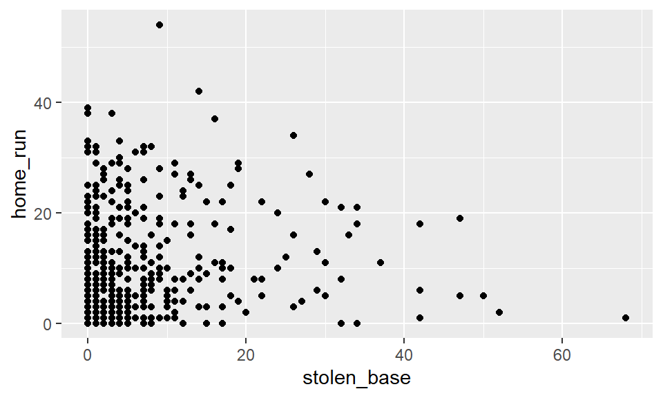
Since both variables here are integer-valued, several of the observations have the same coordinates, and thus the corresponding points are plotted on top of one another. This can misrepresent the data!
Add transparency
To combat this, we can add transparency to the points, using the
alpha argument. This allows for us to see that the
overplotting occurs where the darker dots are.
ggplot(data = mlbbat10, aes(x = stolen_base, y = home_run)) +
geom_point(alpha = 0.5)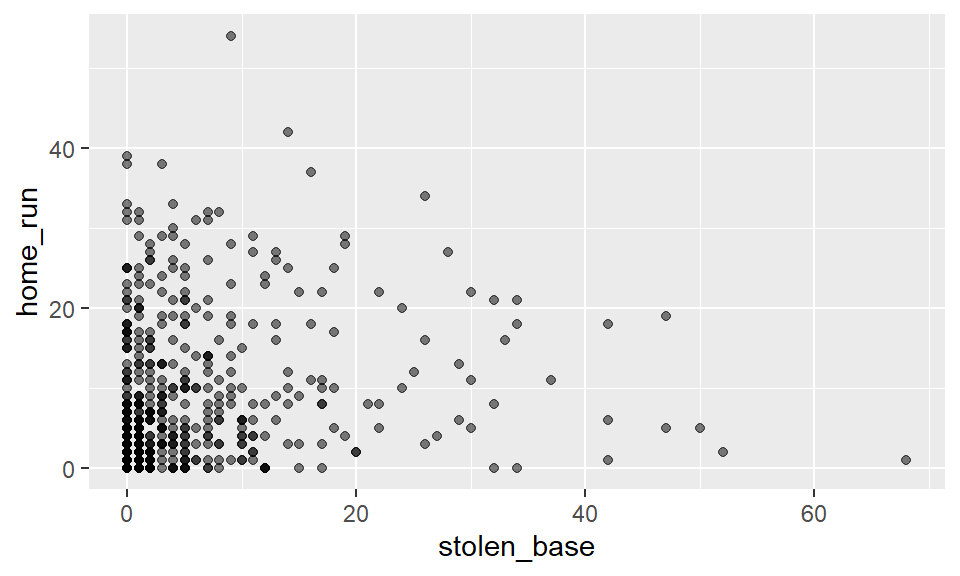
Add some jitter
Another approach is add some jitter to the plot, just like what we did with the boxplots!
ggplot(data = mlbbat10, aes(x = stolen_base, y = home_run)) +
geom_jitter(alpha = 0.5)Identifying outliers
In this plot, there are two points that stand out as potential
outliers: the one in the lower-right hand corner, and the one at the
very top. We will discuss later in the course how to handle these
outliers, but for now, it is enough to simply identify them and
investigate them. In this case, we can use the filter()
function to identify those players with at least 60
stolen bases or at least 50 home runs. As it turns out,
the player in the lower-right hand corner is Juan Pierre, who is one of
the speediest and least powerful hitters in recent memory. The player at
the top is Jose Bautista, one of the game’s most revered sluggers.
mlbbat10 |>
filter(stolen_base > 60 | home_run > 50) |>
dplyr::select(name, team, position, stolen_base, home_run)See if you can find the outliers in the next exercise.
Your turn!
Now that you’ve seen several examples, it’s time to practice creating and interpreting scatterplots yourself. Remember: - Put the response variable on the y-axis - Put the explanatory variable on the x-axis - Look for form, direction, strength, and outliers
In later units (Chapter 5 of the IMS textbook), we will discuss how outliers can affect the results of a linear regression model and how we can deal with them. For now, it is enough to simply identify them and note how the relationship between two variables may change as a result of removing outliers.
Real-World Application: Baseball Statistics
In baseball, small sample sizes can be misleading. A player who goes 2-for-2 has a perfect 1.000 batting average, but we wouldn’t expect that to continue!
This is why we filter for players with at least 200 at-bats—we want reliable rate statistics based on sufficient opportunities.
Your task: Clean the data and create a clearer scatterplot.
Recall that in the baseball example earlier in the lesson, most of the points were clustered in the lower left corner of the plot, making it difficult to see the general pattern of the majority of the data. This difficulty was caused by a few outlying players whose on-base percentages (OBPs) were exceptionally high. These values are present in our dataset only because these players had very few batting opportunities.
Both OBP and SLG are known as rate statistics, since they measure the frequency of certain events over time (as opposed to their count). In order to compare these rates sensibly, it makes sense to include only players with a reasonable number of opportunities, so that these observed rates have the chance to approach what we might expect from a player’s long-run rate.
In Major League Baseball, batters qualify for the batting title only
if they have 3.1 plate appearances per game. This translates into
roughly 502 plate appearances in a 162-game season. The
mlbbat10 dataset does not include plate appearances as a
variable, but we can use at-bats (at_bat)–which constitute
a subset of plate appearances–as a proxy.
Let’s make a scatterplot of the same relationship as before, but only for players with at least 200 at-bats. To do this, we’ll need to carry out the following steps:
- Create a new dataset named
ab_gt_200which contains only the players who had at least 200 at-bats. - Using
ab_gt_200, create a scatterplot forslgas a function ofobp.
# Filter for AB greater than or equal to 200
ab_gt_200 <- mlbbat10 |>
filter(___)
# Scatterplot of slg vs. obp
ggplot(ab_gt_200, aes(x = ___, y = ___)) +
geom_point()mlbbat10 |>
filter(at_bat >= 200)ggplot(ab_gt_200, aes(x = obp, y = slg)) +
geom_point()# Filter for AB greater than or equal to 200
ab_gt_200 <- mlbbat10 |>
filter(at_bat >= 200)
# Scatterplot of slg vs. obp
ggplot(ab_gt_200, aes(x = obp, y = slg)) +
geom_point()Notice, there is still one player who seems to be far from the rest of the data.
Use filter() to find the observation (row) that
corresponds to the player from the ab_gt_200 dataset with
whose OBP was below 0.200.
ab_gt_200 |>
filter(___)# Identify the outlying player
ab_gt_200 |>
filter(obp < 0.2)Congratulations!
You have successfully completed this activity. You need to generate a hash for submission, click “Next Topic”, generate the hash, and submit it on Blackboard.
Submit
Check Your Progress
Click the button below to see how many required exercises you have completed.